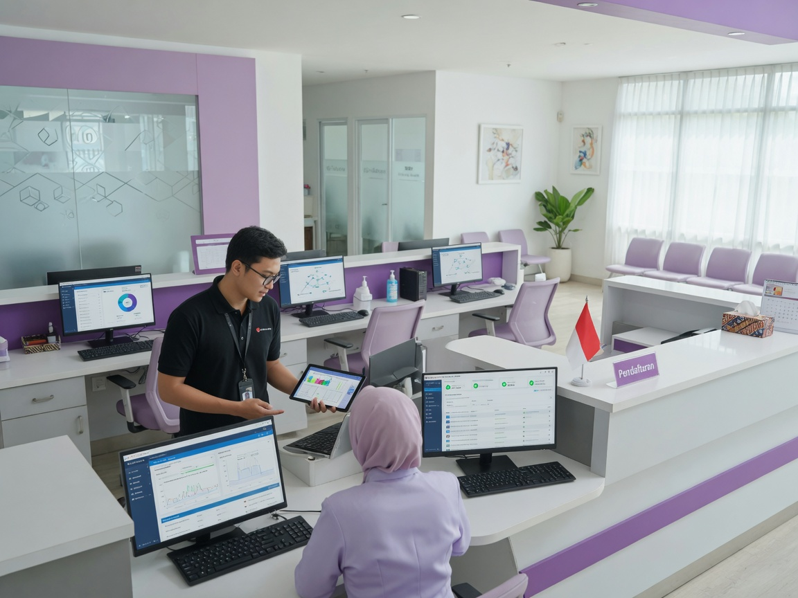

Dukungan teknis profesional untuk menjaga infrastruktur IT bisnis Anda berjalan optimal — dari helpdesk harian, troubleshooting hardware & software, hingga maintenance berkala.
Creative Network menyediakan layanan IT Support yang dirancang untuk UMKM, kantor, klinik, sekolah, dan perusahaan di Kudus dan sekitarnya. Tim kami siap membantu mengatasi gangguan teknis, melakukan maintenance rutin, dan memastikan seluruh perangkat IT berfungsi dengan baik.
Masalah IT yang tidak ditangani dengan cepat dapat mengganggu produktivitas, merugikan bisnis, dan membuat karyawan frustrasi. Dengan IT Support dari Creative Network, Anda mendapatkan partner teknologi yang responsif dan terpercaya.
IT Support kami fleksibel dan disesuaikan dengan skala bisnis Anda.
5–30 workstation yang butuh dukungan IT tanpa perlu hire staff IT full-time.
Fasilitas yang membutuhkan sistem IT stabil untuk operasional harian.
Lingkungan kerja dengan kebutuhan maintenance perangkat dan jaringan lokal.
Cakupan layanan IT Support Creative Network yang komprehensif.
Akses remote untuk troubleshooting cepat tanpa menunggu kunjungan teknisi ke lokasi.
Kunjungan teknisi untuk perbaikan hardware, instalasi, dan masalah yang tidak bisa diselesaikan remote.
Jadwal maintenance berkala — update OS, pembersihan sistem, cek kesehatan hardware.
Setup komputer baru, printer, scanner, dan konfigurasi software bisnis.
Pembuatan akun, reset password, dan manajemen akses pengguna.
Panduan dan bantuan backup data penting agar tidak hilang saat terjadi masalah.
Instalasi, update, dan monitoring antivirus untuk proteksi endpoint.
Ringkasan tiket, masalah yang ditangani, dan rekomendasi perbaikan ke depan.
Harga disesuaikan dengan jumlah perangkat dan kebutuhan. Hubungi kami untuk penawaran terbaik.
Untuk UMKM dengan kebutuhan IT dasar, 1–10 perangkat.
Untuk kantor menengah, 10–30 perangkat dengan kebutuhan rutin.
Untuk perusahaan besar, 30+ perangkat, SLA khusus.
8 tools dukungan IT harian — klik kartu untuk tahu kegunaan di lapangan.

Creative Network mendukung operasional IT cabang Kudus, Semarang, dan Jepara. Meliputi troubleshooting perangkat kantor, maintenance jaringan, dan koordinasi remote support antar lokasi.
Hubungi kami via WhatsApp, telepon, atau email saat ada kendala IT.
Tim menganalisis masalah secara remote atau menjadwalkan kunjungan on-site.
Perbaikan, instalasi, atau konfigurasi dilakukan sesuai kebutuhan.
Memastikan sistem normal dan memberikan rekomendasi pencegahan.
Hubungi Creative Network sekarang untuk konsultasi gratis dan penawaran paket IT Support terbaik.